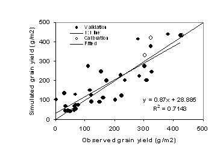
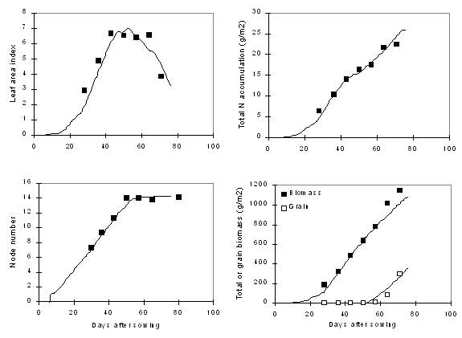
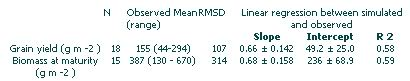

Introduction
The cowpea module was developed by Peter Carberry and Michael Robertson . The reader is referred to the science document for the plant module for a comprehensive description of the processes simulated by APSIM-Cowpea. This document outlines some cowpea-specific issues that are not covered by the plant science document.
Goto generic Plant model documentation
Notable features of APSIM-COWPEA
The module does not simulate production from second and further flushes of flowers and pods.
APSIM-Cowpea is not phosphorus-responsive, this is currently under development.
Crop growth is not sensitive to waterlogging.
Cultivars and crop classes
There is one crop class. There are 4 cultivars able to be simulated: Banjo, Red Caloon, CPI28215, spreading. Cultivars differ in terms of biomass partitioning to grain and phenology. The spreading type is typical of that found growing under smallholder conditions in southern Africa.
Validation
APSIM-Cowpea has received testing across the northern Australia , with factors such as cultivars, sowing date, irrigation, soil type, row spacing varying. There are no papers describing validation of APSIM-Cowpea, however the accompanying figures demonstrate the performance of the module against Australian datasets. Table 1 summarises module performance.

Figure 1: Performance of the cowpea module (observed versus simulated grain yield in g/m2) against test datasets from northern Australia .

Figure 2: Time course of crop gowth for cowpea cv. Banjo sown at Gatton , Queensland under full irrigation. Symbols are observed data and lines are simulated.

Table 1: Statistics for goodness-of-fit for grain yield and biomass at maturity for cowpea module testing.
In which environments should this model be used?
APSIM-Cowpea can be used with most confidence in the sub-tropics and tropics of northern Australia. Limited tested has been conducted in southern Africa.
References
Adiku S.K., Carberry P.S. Rose, C. W., McCown, R.L. & Braddock, R. (1993). Assessing the performance of maize (Zea mays - cowpea (Vigna unguiculata) intercrop under variable soil and climate conditions in the tropics. Proceedings of the 7th Australian Society of Agronomy Conference, September 1993, Adelaide , South Australia , p. 382. Carberry, P.S.; Adiku, S.G.K.;
McCown, R.L. and Keating, B.A. 1996b. Application of the APSIM cropping systems model to intercropping systems. In: O Ito, C Johansen, JJ Adu-Gyamfi, K Katayama, JVDK Kumar Rao, and TJ Rego (Eds.) Dynamics of Roots and Nitrogen in Cropping Systems of the Semi-Arid Tropics, pp. 637-648. Japan International Research Centre for Agricultural Sciences.